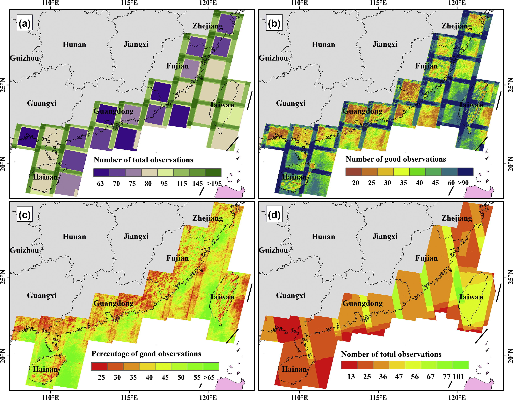

5 week5
5.1 Summary
This week was a systematic introduction to the tool Google Earth Engine (GEE), symbolising the fact that we can now actually work with remotely sensed data and complete analyses, and I’m going to summarise what I’ve learned in class.
| Feature | Specific functions |
|---|---|
| Made for geospatial analysis | 1. Allows large-scale geospatial analyses, storing data on the server. Because of the server side of the Earth Engine data and computing resources operations performed on Google servers. 2. images are rasters, with band. features are vectors, with geometry and attributes |
| Client-side and server-side | 3. Ability to apply written code (Javascript). In GEE, we have code that runs on the client side and includes tasks such as user interface operations, initiating data requests and processing user input. Ability to create searchable online applications 4. “Earth Engine Objects” in GEE are the core components that represent various types of data and operations in Google Earth Engine. Prefixed with “ee,”, including everything from images and collections of images. 5. The client-side code in GEE is what you write in your local environment, while the server-side code runs on GEE’s servers. The data doesn’t actually exist on the client side, and a loop such as a for loop that tries to loop through an object won’t know what it’s supposed to loop through. So GEE uses a mapping function that maps it to the server, where it is applied to each element in the collection. |
| Automation of coordinate systems and projections | 6. In GEE, we can control the scale (pixel resolution) at which analyses are performed, which may differ from the original resolution of the data (determined by the scale specified in the analysis or output). The system is managed through the use of image pyramids (image datasets in GEE are stored as pyramids of multiple resolutions) and resampling methods (nearest neighbours), which allow the flexibility to use different scales to meet a variety of analysis needs. 7. Mercator projection is used by default and the user usually does not need to be concerned with projections in GEE. The platform is responsible for transforming and displaying all data in a common projection. |
5.1.1 Simple operations at GEE
- Learning to use objects
In GEE, vectors, rasters, elements, strings, numbers, etc. are all objects. Each object belongs to a class that defines attributes and operations that can be performed.
The simplest form of spatial data is the Geometry object, a geometric figure without attributes, which becomes a Feature after associating attributes.
Collections: Feature collections are compilations of Features that can be used to represent more complex data sets with spatial and attribute data. Image collections are stacks of raster images. Allows the user to load, manipulate and analyse multiple images as a cohesive data set.

- Reduce image data
Reduction of image collections, using a function to extract the extreme or aggregated values for each pixel in the collection
region reduction, which generates statistical data for images within a specified study area
Neighbourhood reduction, a method of relating each pixel to the surrounding area, analyses the window of pixels around the central pixel.

- Regression
Pixel-level linear regression: one band as the dependent variable and another band as the independent variable (usually time)
Multiple linear regression: contains multiple dependent and independent variables, similar to ordinary least squares (OLS) regression for each dependent variable.
Regression using Reducers, performed pixel by pixel on a collection of images spanning several years, can also involve aggregating values within polygons using data from a single date. A constant must be added as an independent variable to account for the intercept.
- Combining different datasets
Set: join two image collections based on common attributes or indexes; also can join different element collections together.
Joins: implemented through in the filter. leftField refers to the index or attribute in the primary dataset; rightField refers to the corresponding attribute in the secondary dataset.
| Joining type | Principle |
|---|---|
| Simple join | Matches any record in the secondary set to the primary set. |
| Inverted join | Keep any records in the primary set that have no matches in the secondary set. |
| Internal join | Return all matching records between the two collections as a new element collection. |
| Spatial join | The join attributes are stored in the attributes of the elements. Intersection operations can be performed and spatial subsetting of data is also possible. |

5.2 Applications
Since this week is an introduction to the GEE platform, I’m going to explore why and how to use GEE for research:
5.2.1 Reasons for using GEE
In traditional geographic information science (GIS) there are three main challenges(Yu & Gong 2012):
| No. | Challenge |
|---|---|
| 1 | Three-dimensional global representation and visualisation of geospatial data |
| 2 | Pre-processing and mining of spatial big data |
| 3 | Spatio-temporal techniques for studying geographic processes |
The combination of Google Earth (2005) and GEE (2010) provides a platform for earth system science research and is an effective tool for the challenges faced by traditional GIS and meets the needs of global environmental change research. Compared to the visualisation capabilities of Google Earth, the cloud computing capability of GEE is an effective tool for the analysis of global geospatial big data (Amani et al. 2020). The feature of providing free services to support more geospatial data is especially helpful for geographic research in less developed regions.
5.2.2 Appliance
With a long record of earth observations and algorithms for analysing geo-big data, GEE has a clear role in environmental monitoring and analysis. This includes all aspects of agriculture, water resources, disasters, climate change, forests, etc (Bullock, Woodcock & Olofsson 2020, Busker et al. 2019, Meilianda et al. 2019, Workie & Debella 2018, Xiong et al. 2017). As combating climate change and reducing carbon emissions is a long-term global issue, I think the GEE platform can continue to play a role in this field, and focusing on this aspect of research can also help me find more inspiration.

Chen et al.(Chen et al. 2017)used time-series Landsat, which provides biophysical features such as identification of greenness, canopy cover, and tidal inundation to map mangrove forests in China, and used the integration of Sentinel-1A with the modified Normalized Difference Water Index (mNDWI) to identify mangrove-associated water bodies. The whole process included six regions, and 1941 Landsat images and 586 Sentinel-1A images were run on GEE with an accuracy greater than 95%. Mangrove forests, as one of the most carbon-rich forests in the tropics, are of great significance for the study of sustainable management and carbon stock. Hao et al. (Hao et al. 2019) estimated the interannual variations of surface temperature and seasonally integrated normalised vegetation index (NVI) of the Three Gorges catchment area, China, from 2000-2015 by using the Moderate Resolution Imaging Spectroradiometer (MODIS) product on the GEE. Long-term monitoring is easily possible using the GEE platform.
5.3 Reflection
This week was my first exposure to the GEE platform and I learnt not only the features and some terminology of GEE allowing large-scale geospatial analyses, but also the process of data import, cropping, texture analysis, and PCA analyses, combining it with what I had learnt previously. On a technical level, what interested me most was the fact that GEE’s cloud-based computing power and its archive of satellite imagery, other socio-economic and geographic data provide particularly convenient conditions for realising spatio-temporal data studies. The fact that I don’t have to download large amounts of data to a local server or my own computer to call up data, process and analyse it, and also export the results, as well as use the archive function, greatly improves the efficiency of my research. I believe this is an important reason why it has become an effective tool for the remote sensing community.
But also because of its ability to focus on processing geospatial data, GEE’s connections to other broader subject areas are still worth exploring, such as biology and economics. In using GEE, I do not think that its visualisation capability is an advantage, at least not for 3D display. Also I learned that GEE’s modelling capabilities are actually limited (Zhao et al. 2021), for example in simulating complex geographic or ecological processes, such as modelling vegetation dynamics. This still requires more computational resources, open source datasets and the development of image processing algorithms to be integrated with assessment and management decisions to really help solve environmental problems.
5.4 References
Amani, M. et al., 2020. Google Earth Engine Cloud Computing Platform for Remote Sensing Big Data Applications: A Comprehensive Review, IEEE Journal of Selected Topics in Applied Earth Observations and Remote Sensing, årg. 13, s. 5326–5350.
Bullock, E.L., Woodcock, C.E. & Olofsson, P., 2020. Monitoring tropical forest degradation using spectral unmixing and Landsat time series analysis, Remote Sensing of Environment, årg. 238, s. 110968.
Busker, T. et al., 2019. A global lake and reservoir volume analysis using a surface water dataset and satellite altimetry, Hydrology and Earth System Sciences. Copernicus GmbH, årg. 23, nr. 2, s. 669–690.
Chen, B. et al., 2017. A mangrove forest map of China in 2015: Analysis of time series Landsat 7/8 and Sentinel-1A imagery in Google Earth Engine cloud computing platform, ISPRS Journal of Photogrammetry and Remote Sensing, årg. 131, s. 104–120.
Hao, B. et al., 2019. Land Use Change and Climate Variation in the Three Gorges Reservoir Catchment from 2000 to 2015 Based on the Google Earth Engine, Sensors. Multidisciplinary Digital Publishing Institute, årg. 19, nr. 9, s. 2118.
Meilianda, E. et al., 2019. Assessment of post-tsunami disaster land use/land cover change and potential impact of future sea-level rise to low-lying coastal areas: A case study of Banda Aceh coast of Indonesia, International Journal of Disaster Risk Reduction, årg. 41, s. 101292.
Workie, T.G. & Debella, H.J., 2018. Climate change and its effects on vegetation phenology across ecoregions of Ethiopia, Global Ecology and Conservation, årg. 13, s. e00366.
Xiong, J. et al., 2017. Automated cropland mapping of continental Africa using Google Earth Engine cloud computing, ISPRS Journal of Photogrammetry and Remote Sensing, årg. 126, s. 225–244.
Yu, L. & Gong, P., 2012. Google Earth as a virtual globe tool for Earth science applications at the global scale: progress and perspectives, International Journal of Remote Sensing. Taylor & Francis, årg. 33, nr. 12, s. 3966–3986.
Zhao, Q. et al., 2021. Progress and Trends in the Application of Google Earth and Google Earth Engine, Remote Sensing. Multidisciplinary Digital Publishing Institute, årg. 13, nr. 18, s. 3778.